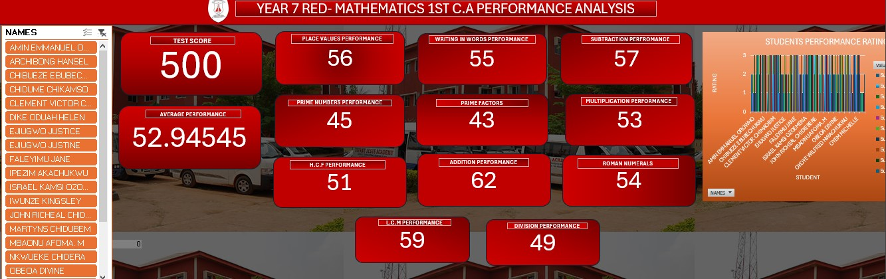
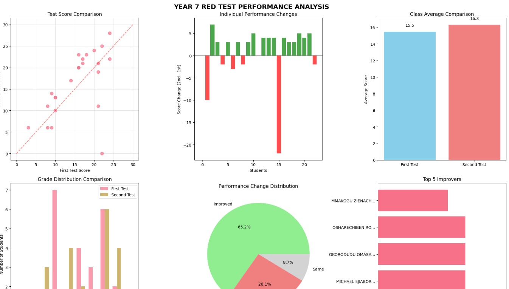
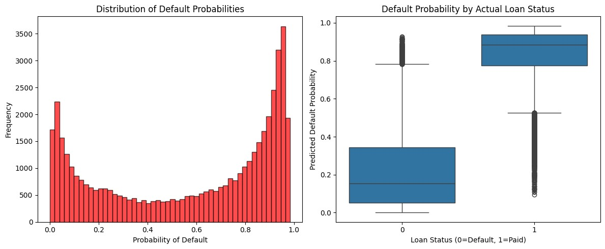

Visualization board for Year 7, 8 and 10 students of IJA, Showing there 1st C.A result analysis
Using Power Query, Pivot Table and other tools in EXCEL

Chart Visualization and Analysis of the student Performance aiding more insights to the C.A data gotten
Made use of Python libraries in Data Analysis Scipy, Matplotlip, Numpy, Seaborn, Pandas e.t.c

Student Analysis Report Generation using Python
Made use of Python libraries to generate Reports in Documents for individual Students showing there strengths and weakness.

Project: Predictive Loan Risk Modeling & Strategic Interest Rate Optimization
Using machine learning models to predict loan risks and optimize interest rates for better financial outcomes.
This project implements an end-to-end financial analytics pipeline designed to automate loan approval decisions and optimize interest rate pricing for a portfolio of 50,000 loan applications. By combining machine learning-driven risk assessment with a mathematical pricing engine, the system balances risk mitigation with profit maximization.